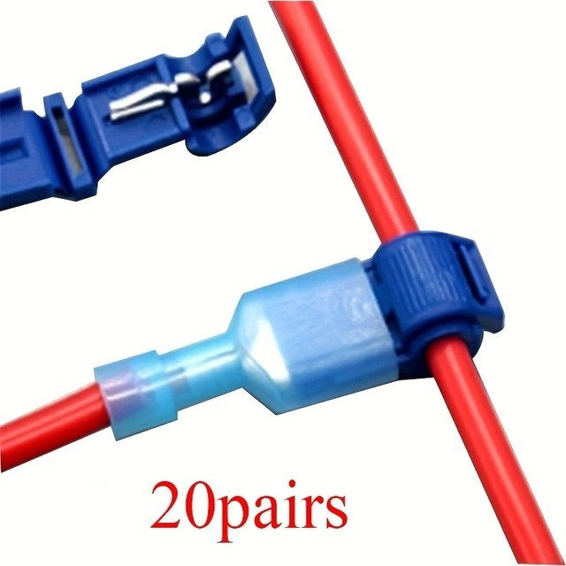
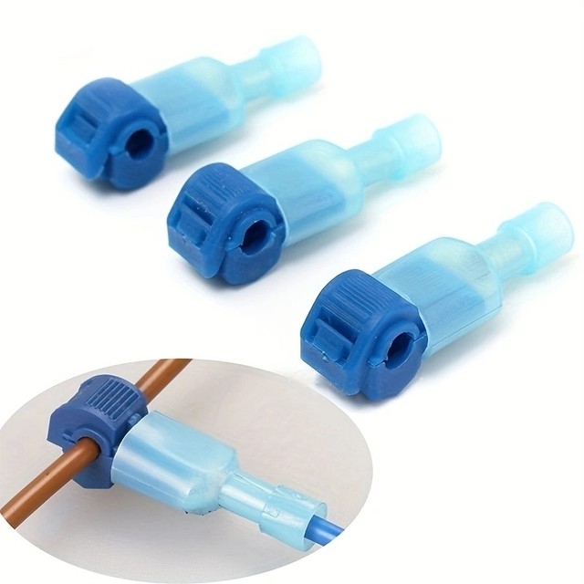
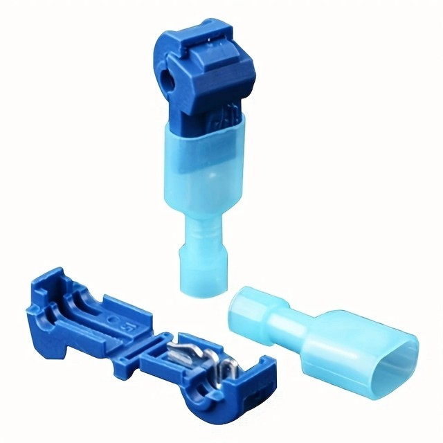
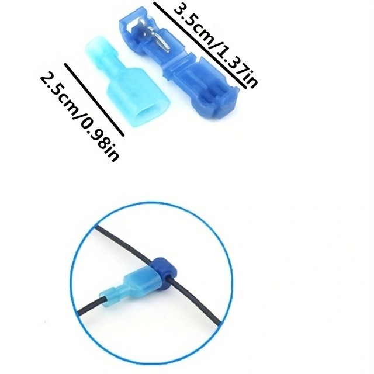
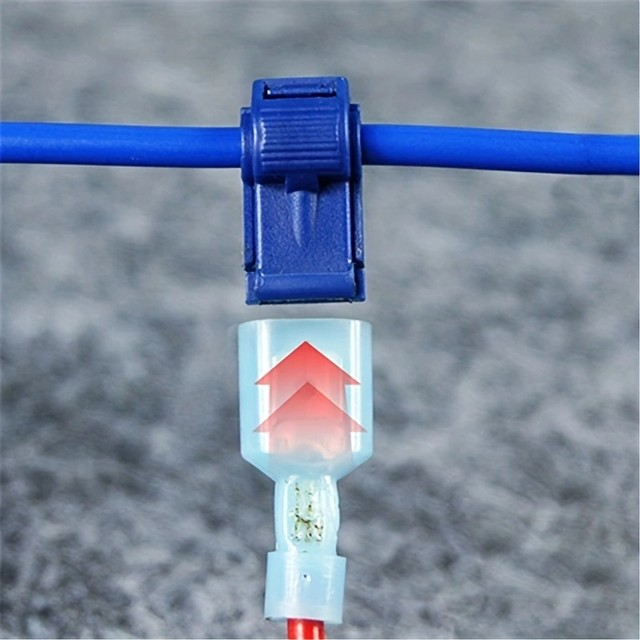
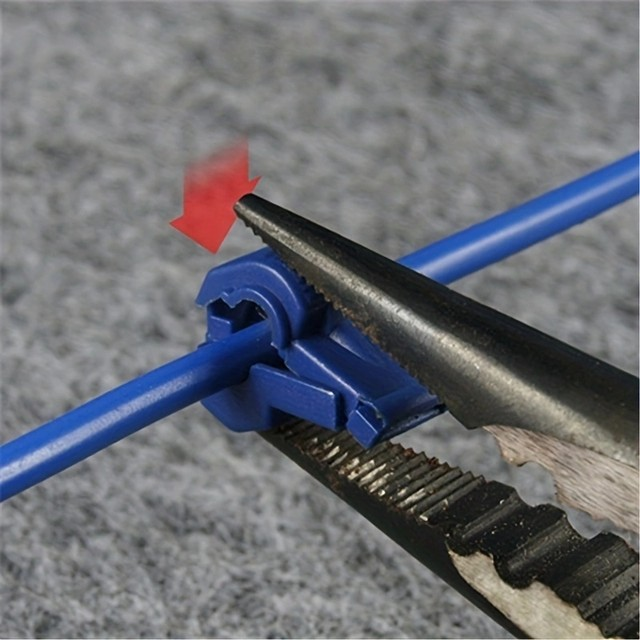
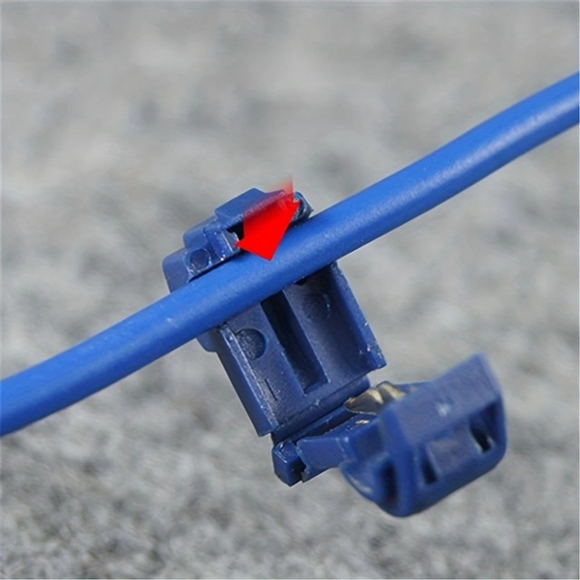
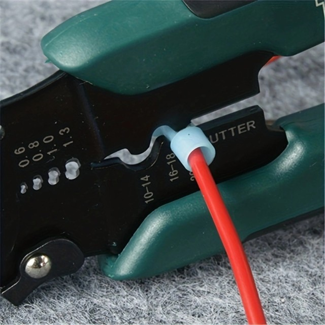
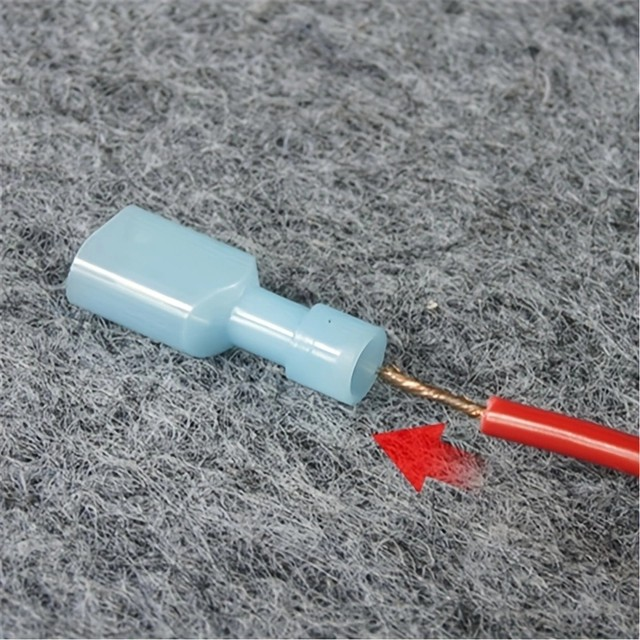
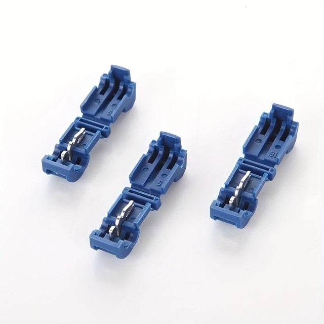

Details:
* The quick splice wire connectors set can be widely used in the wire connection
* Prevents the wire from shorting out
* Great for tapping into wires to test
* Use with the male quick disconnect for easy safe splicing into wires
* The spade connector is not included, other accessories are not included
* Color: Blue(as pictures show)
Package contents:20pairs
Note: The real color of the item may be slightly different from the pictures shown on website caused by many factors such as brightness of your monitor and light brightness










